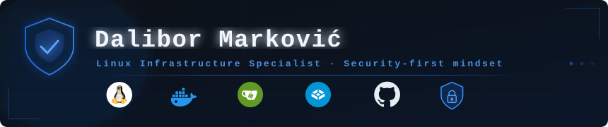

Specijalista za sigurnost Linux infrastrukture. Fokusiran na izgradnju stabilnih, kontejnerizovanih self-hosted sistema — sa naglaskom na minimalni napadni prostor, rigorozne sigurnosne polise i automatizaciju administracije.
| Oblast | Opis |
|---|---|
| 🔒 System Hardening | Revizija sigurnosti OS-a, SSH restrikcije i kontrola mrežnog pristupa |
| 🛡️ Intrusion Prevention | Aktivna zaštita, monitoring logova i prevencija automatizovanih napada |
| 🐳 Docker ekosistem | Kontejnerizacija, Compose, izolacija i sigurnost servisa |
| ☁️ Self-hosted infrastruktura | TrueNAS, Gitea, privatni cloud stack |
| 🗄️ Database Administration | Upravljanje i optimizacija baza podataka |
| ⚙️ Automatizacija | Skriptovanje, monitoring i optimizacija radnih tokova |